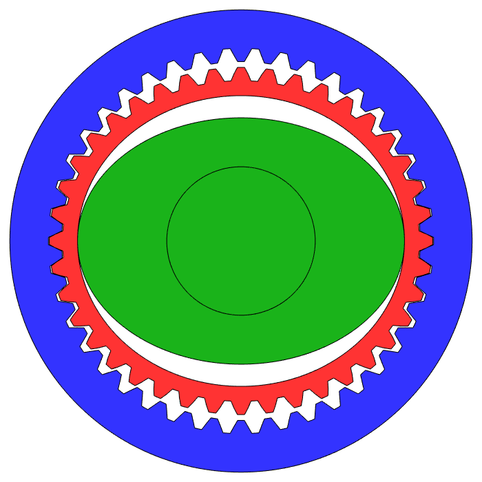
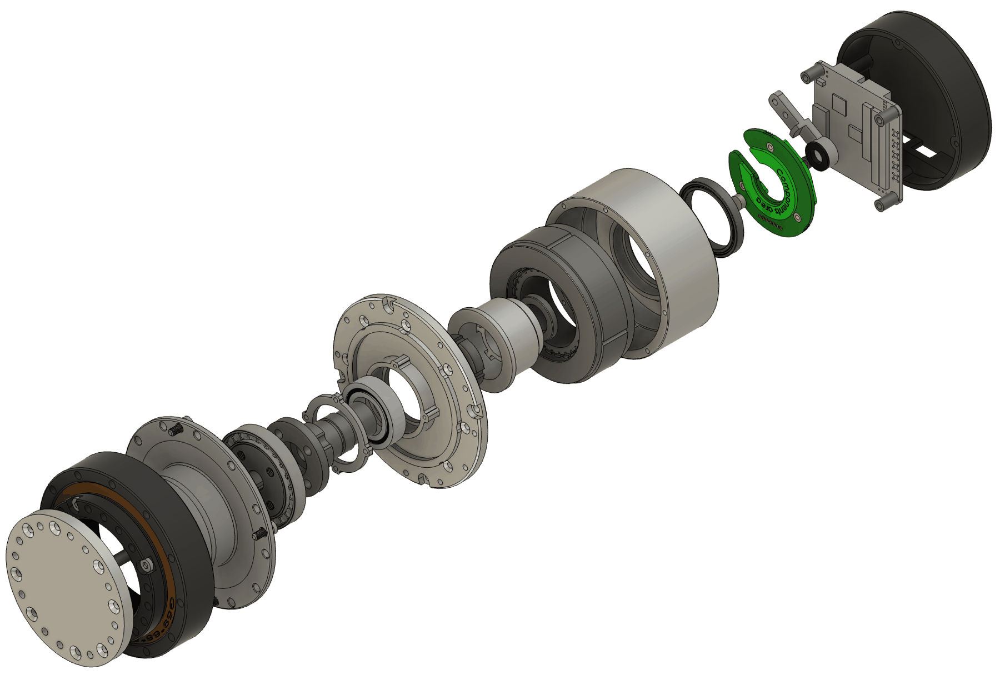
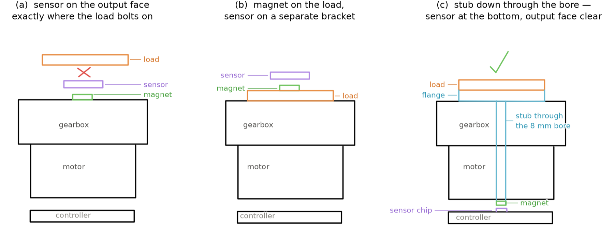
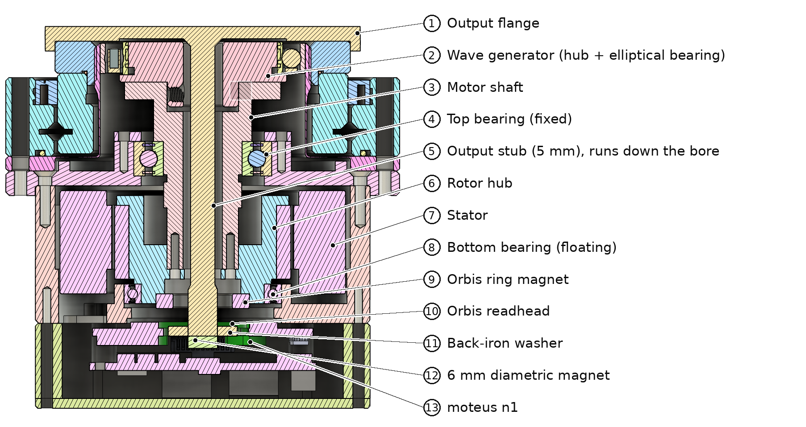
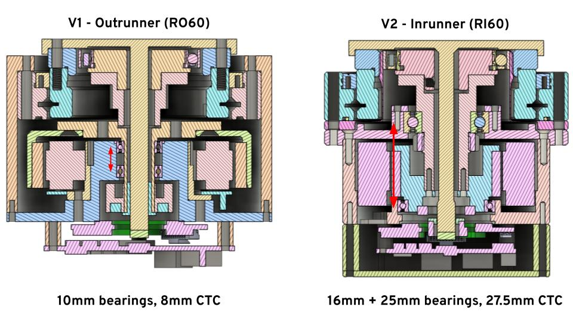
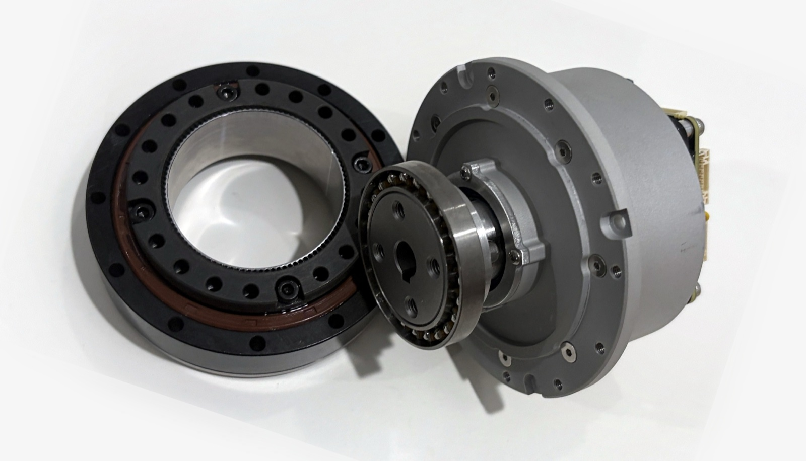
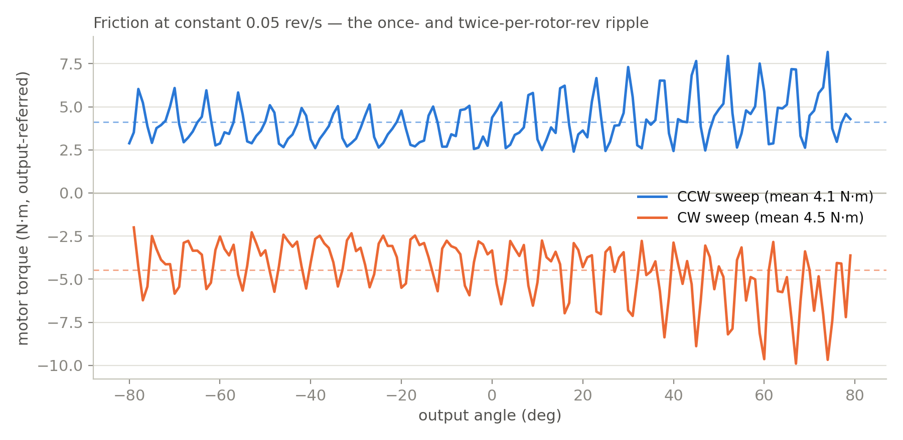

01 Harmonic Drive Actuator

- Writeup
- Full writeup belowAlso on Medium
- Repo
- harivin/harmonic-drive-actuatorSTEP CAD and control code, with the raw data behind the plots.
A 50:1 strain wave actuator, built around a $100 ZXF17-50 gearbox from AliExpress. The motor is a CubeMars RI60 frameless inrunner with 14 pole pairs, driven by an mjbots moteus n1 controller running FOC over CAN-FD. Position comes from two 14-bit absolute encoders: an RLS Orbis ring encoder (BiSS-C) on the rotor, and an AS5047P on the output. I designed every custom part; JLCCNC machined them.
Numbers
| Reduction | 50:1 strain wave |
|---|---|
| Size and mass | ⌀80 mm × 78 mm, 991 g |
| Torque | 21 N·m gearbox rating4.4 N·m verified so far |
| Breakaway | about 10 N·m |
| Max clean stiffness | 12,800 N·m/rev (2,040 N·m/rad) |
Limits
- Output torque is verified only to 4.4 N·m. The 21 N·m figure is the gearbox's rating.
- Below a 5 to 7 N·m dead band the output does not move, and breakaway from rest takes about 10 N·m.
- There's no hollow bore. The output encoder's stub fills it.
- An assembly-order change meant the bearing nut that clamped the top bearing's inner race had to come out, so that race is held by Loctite 641 against the wave generator's axial thrust. It's the first thing I'd fix in a version 2.
- Sensing force through flexspline windup is out of reach on this hardware. It needs 0.05° of signal under a 0.29° noise floor.
Full writeup
An Actuator That Nobody Designs
A $100 gearbox, a frameless motor, two encoders, and everything in between.
If you follow the latest news on robotics, you'll know that one of the biggest shifts happening right now is integrating physical intelligence into humanoids and robotic arms to do autonomous work in the real world. This demand for complex software integration has created a resurgence of rapid hardware development. Companies are spending billions of dollars figuring out what should go inside the joints that drive these systems. These components are called actuators, the muscles for modern robots. Most people know about planetary actuators, and now cycloidal ones have become very common, but there's a third type that's been running in industrial robot arms for almost forty years and yet it's still not that known: the harmonic drive (also known as the strain wave gear).
Why? Because it's almost impossible to make at home.
A harmonic drive has three main parts, and two are out of reach. The flexspline is a thin-walled steel cup of teeth that has to bend a few million times without cracking and has to deform uniformly, resulting in extremely precise machining that no standard mill can do. The wave generator rides on a bearing whose races are actually an ellipse. You can 3D print a cycloidal disc or a couple of planetary gears on a $100 printer and it'll work decently, which is exactly why every open-source actuator you've seen consists of those two reductions, but I wanted to try something different.
So I bought the two parts I couldn't make by grabbing a ZXF17-50 harmonic gearbox off AliExpress for only $100, and designed everything else around it.

Quick rundown on how a harmonic gearbox works since it's a little bit confusing. The flexspline cup sits inside a rigid toothed ring called the circular spline, and the elliptical wave generator squeezes the cup so it bulges out along the ellipse's long axis and meshes with the ring in two arcs on opposite sides. The cup has two fewer teeth than the ring (100 versus 102 on the ZXF17), so every turn of the wave generator rotates the cup by two teeth. 100/2 is where the 50:1 comes from.
The two-contact-points idea is confusing at first, but the important part is that it's not two teeth touching, it's two arcs, and each arc has around 15 teeth in mesh at the same time. Around 30% of all teeth are engaged at any instant, whereas a spur gear has one or two, which is why a harmonic drive has such high torque capacity and torsional stiffness for its size. And since the flexspline is preloaded against the ring, there's near-zero backlash. The teeth are held in continuous contact, so there's no clearance for them to rattle around in.
My targets going in were simple. Around 21 N·m at the output, which is what the ZXF17 is rated for anyway. An 80 mm envelope, roughly the size of a coffee mug, so it'd be plausible as an elbow or a wrist. Absolute position on both sides of the gearbox, full access to current and torque control, and a total cost of a few hundred dollars.
Buy the two parts you can't make
I scrolled through almost every single "harmonic drive" listing on AliExpress. Most of them were full actuators, and the rest were large, expensive gearboxes with outrageous shipping costs. The one that stood out was the ZXF17: a pancake-style gearbox, 80 mm across (the 17 is the frame size), rated for 21 N·m, about $100. A real harmonic drive at that size from a name brand is well over a thousand dollars, so this one seemed promising. I picked the 50:1 version because it felt like the right balance between torque and backdrivability. Looking back, if the goal is a joint that works next to people, a lower ratio would have been the better call, and the measurements later in this post are why.

The ZXF17 ships with a NEMA 17 bolt pattern on the input face, and for about a day my plan was to bolt a NEMA 17 to it, wrap a housing around the pair, and call it an actuator. But the factory had already designed that interface, so all I'd really be doing is assembling someone else's actuator and putting my name on the housing. A stepper also gives you position and not torque, which means no current loop I could get at, no impedance control, and no way to ask the joint how hard it's pushing. The control layer is what separates a real actuator worth thousands of dollars from a gearbox with a stepper bolted on, and that layer was the whole reason I was doing this.
I went frameless instead. A frameless motor is a rotor and a stator in two loose pieces. No bearings, no shaft, no housing, no encoder. You design all of that. For the controller I picked a moteus n1, because it was small, ran current control over CAN-FD, and had a position encoder already sitting on the board. That last detail ends up mattering a lot.
That's everything I bought: a gearbox I couldn't make, a frameless motor, and a controller. Everything else is either basic hardware or a part I designed and had machined. One decision, integrating a frameless motor instead of bolting a finished one on, created every other problem in this post. That was sort of the point.

Two encoders, one budget
To control a geared joint properly you want to know the position on both sides of the gearbox. The motor side is needed for field-oriented control, so the controller knows which coils to energize, and it has to be absolute so it knows the rotor's position at power-on without homing. The output side tells you exactly where the load is. In most harmonic actuator applications you can get away with just the input encoder, since the gearbox has almost no backlash, but reading the load through the input means dealing with flexspline windup, and for virtual torque sensing (determining torque without a torque sensor) you need both sides.
Real harmonic actuators solve this with a hollow bore straight down the middle, the input and output shafts nested coaxially. Wires run through the joint, and both encoders are ring encoders: a magnetic ring around the shaft with a readhead beside it. High-precision, non-contact, and pass-through for shafts. That's the right answer for a robot arm, and I really wanted it. Two problems. The AliExpress gearboxes aren't hollow, because they're mass-produced for people bolting on a NEMA 17 with an 8 mm input shaft; only the name brands make compact hollow-bore units, at name-brand prices. And two ring encoders cost more than everything else in the build combined. Thankfully RLS generously sponsored the design with one Orbis, a 14-bit absolute ring encoder over BiSS-C, and that one part is what made my twist on the design possible.
So what I had was one ring encoder and one cheap on-axis encoder. An on-axis encoder is simply a diametric magnet on the end of a shaft with a sensor chip a couple millimeters below it, about ten dollars. The real question is which side gets which.

Putting the on-axis magnet on the output is the obvious answer, and it does not work. It sits on the output face, which is exactly where the load bolts on, so the sensor would cover the face. The workaround is putting the magnet on the load itself and mounting the sensor on a bracket detached from the motor, which is inelegant. I wanted both encoders attached to the motor, and preferably on the bottom, so the electronics stay in one accessible stack.
The ZXF17's wave generator hub comes with an 8 mm keyed bore and four M4 face-mount holes. Normally the bore locks onto the NEMA 17's shaft and the face holes screw a retaining piece onto the end of it. Everyone uses the bore; I used the holes. I made my own shaft which wraps around the 8 mm bore and bolts both to the facemount holes and the custom hub glued to the rotor. Next, I designed a flange bolted to the output, carrying a 5 mm shaft that passes down through the 8 mm bore to the bottom of the actuator. The rotor hub holds the ring magnet; the 5 mm shaft holds the diametric magnet. The moteus n1 already has an encoder chip integrated on the board, and by stacking the Orbis readhead right above the moteus I got an extremely compact sensing setup, bolted to the actuator, conveniently all at the bottom.
That's also why the motor side had to be the ring encoder: the output stub passes straight through where a motor-shaft magnet would go, so the rotor gets the ring so the stub can pass through it. That puts both encoders at the bottom and leaves the output face completely clear: two absolute encoders across a 50:1 reduction, one sponsored and one that came free with the controller.
There's one problem with parking two magnetic encoders a couple millimeters apart: their magnetic fields disturb each other. The diametric magnet on the output stub is nested directly inside the Orbis ring, and while it is just below the sensor chips, the magnetic field from the ring is disturbed. To fix this, I added a 2 mm steel washer glued to the shaft right below the diametric magnet acting as a back-iron, giving the stray flux a return path instead of a route to the wrong sensor. I measured the interference with the washer off and on, and with it the AS5047P's jitter actually beats a bare magnet (6 counts vs 9). The residual disturbance on the Orbis is ±66 counts, about ±20° electrical. Not the best but it's only a 6% torque ripple with the output angle, well clear of the level where commutation starts to degrade. Due to the axial slop in the washer, it sits at around a 5° tilt. The magnet itself sits square and that's the most important part.

There's one more payoff beyond cost. The output encoder is rated for 79 arcseconds per count. The gearbox's spec backlash is 10 arcseconds, so the output encoder can't see it. The input encoder on the other hand sits behind a 50:1 reduction, so any output error is 50 times larger: around 1.58 arcseconds per count relative to output. Ten arcseconds of backlash is about 6 counts, allowing this hardware to be viable.
The ultimate tradeoff is sacrificing the hollow bore. On a real arm joint you absolutely need it for wiring, but unfortunately it's filled with a shaft. However, for a bench actuator built to measure the potential for complex control on a strain-wave gearbox, that's a trade I'll take when it saves me four figures.
The motor got picked by a bearing
I originally wanted to use a CubeMars RO60 outrunner motor, where the magnets spin around the outside of the stator. It was thinner than the inrunner, had slightly more torque, and packaged nicely in CAD.
The problem was the bearings were way too close. In an outrunner, the motor's bearings are kind of forced to live between the top and bottom of the motor. My first design also used the Orbis actuator magnet ring clamping collar, which forced the motor's bottom bearing to go up much higher. Because of this, the bearings were only spaced 8 mm apart, center to center, which is extremely small for deep groove bearings and would struggle against the external forces caused by the elliptical wave generator.

An inrunner, a motor where the rotor spins inside the stator, fixes these issues. Although it has slightly less torque and is thicker, the top bearing could nest freely inside the cavity in the ZXF17 gearbox. To prevent the bottom bearing from being raised, I used a larger bearing so that the ring magnet could concentrically nest inside the middle of it, accounting for the radial clearance so that the magnet isn't disturbed by the steel bearing.
Switching to the RI60 did give up a little torque, but it didn't matter. After the 50:1 reduction, the RI60's peak torque lands almost exactly on the gearbox's 21 N·m rating. The gearbox is the limiting factor and the outrunner's extra torque never mattered.
Fixed, floating, and an O-ring
I couldn't find a single documented example of how to constrain the motor bearings in a build like this, so I worked it out, hopefully successfully. I had the shafts machined out of aluminum, since I wanted the actuator light and I don't own a press. Being lighter makes sense, but what does aluminum have to do with a press? A press fit between an aluminum shaft and a steel inner race is asking for trouble: the materials are mismatched in hardness and thermal expansion, so the fit can fret and slowly eat the softer aluminum seat. A slip fit with Loctite avoids that. The compound carries the load, acts as a barrier at the interface, and lets go with heat, which also makes maintenance and testing far easier. The catch is that an aluminum shaft thermally expands more than steel, most importantly in the axial direction. Rigidly constrain both bearings and the actuator binds.
That is why it ends up as a fixed-floating setup. The top bearing is the fixed one, since it sits closest to the wave generator and has to take the eccentric loads: outer race trapped by a shoulder and a retaining lip, inner race trapped by a shoulder and a precision bearing screw… sort of. I'll explain that "sort of" in the next section. The bottom bearing floats: only the inner race is located, and the outer race can slide freely in its bore, so when the shaft grows it just moves instead of binding.
This clamping style forced me onto a 16 mm C3-clearance 2RS bearing, and a C3 bearing in a slip fit needs preload or it has slight radial play. A wave spring under the bottom bearing is the textbook answer, but the smallest one I could find was too big and too strong. So instead there's an O-ring under the floating outer race, acting as a very low-rate spring that takes up the clearance without over-constraining anything. Remove the O-ring and the bottom bearing floats completely freely. The design works either way, and that was deliberate.
It's not a hollow bore, and it's not a continuous shaft. In a perfect version the wave generator hub would be machined as one piece with the motor shaft, extending all the way down through the rotor. That would delete the four screws plus the mating joint between the rotor hub and the upper shaft, massively simplifying assembly and improving concentricity. It would also mean making my own elliptical bearing, which isn't feasible. Given what I could buy and what I could make, this is probably the best it could get: 80 mm in diameter, 78 mm tall, two absolute encoders, and every piece of electronics accessible at the bottom.
Assembly is part of the design (I learned this the expensive way)
The flexspline is a thin cup. It's clamped rigid at the bottom end and only flexes near the open, toothed end, similar to a cantilever beam that is rigid where it's fixed and flexible at its tip. Since the wave generator has to deform the cup, it can only enter from the toothed side.
I had built my motor and shaft as one finished unit, with the wave generator resting on the shaft, planning to push it in from the bottom side. It does not go, and it was never going to. I probably pushed harder than I should have before I stopped and worked out why it wasn't working, and in hindsight the answer was obvious. While technically being the same hole, same diameter, same dimensions, the bottom of the flexspline does not deform.
Fine, reverse the order: seat the wave generator in the gearbox first, then build the motor assembly down onto it and screw the shaft to the rotor hub from the bottom. That reversal cost me twice.
First, the magnet. I already epoxied the Orbis ring magnet into the rotor hub, on top of the six screws that join the shaft to the rotor hub. Bonding it wasn't wrong, it was bonding it before I fully assembled. I punched the magnet out, keeping the rotor hub intact, but unfortunately the magnet didn't survive, and I had to wait a couple days for the replacement.
Second, the bearing nut. The piece that was designed to clamp the top bearing's inner race from below was unfortunately inaccessible in the reversed assembly order, so I had to remove it. Currently, the inner race is held by the shaft shoulder in the opposite direction of the axial thrust, so the only thing holding the inner race in place is the Loctite retaining compound. The strain wave cup thrusts the wave generator toward the open end every revolution, and that load pulls the race away from the shoulder. I knew this early on, and without retention, the wave generator physically walked out during a calibration spin. The Orbis LED went yellow since the readhead gap had shifted. While Loctite 641 technically has a shear strength stronger than what the axial thrust from the gearbox exerts, it's obviously not an ideal solution, and is the first part of the design I would fix if I made a version 2.

The gearbox I could afford, fixed in software
I finally assembled the actuator, but it wouldn't turn, and the first couple of days were just getting used to writing code to the motor and tweaking bugs. I'll keep them short because they're not too important. My replacement ring magnet was mounted 6.2° rotated from the original, which through 14 pole pairs is 87° of electrical angle, so the controller was delivering the exact current I commanded at exactly the wrong angle. I got 6% of my torque, telemetry reported perfect tracking, and from the outside it looked like a broken gearbox. All of which was fixed by recalibration. The moteus's default gains, which are tuned for a bare motor, were 2500x too soft through the 50:1 gearbox (stiffness reflects through a gear ratio as the square of the ratio), and a twenty minute automated gain sweep found kp at 8000 which was 2x margin under where the gearbox started buzzing. There was also a full day lost to incorrectly soldering the BiSS-C wiring and it was completely because I read some docs wrong.
But once it turned… it turned rough. Not uniformly rough but rough in a pattern. Turning the output by hand, which was really hard without a large lever, felt like a terrible stepper motor composed of little notches every couple of degrees that you snap between and can't rest inside. Under power, the torque needed to keep a constant speed rippled once per rotor revolution, 1.4-ish N·m, with a second ripple at twice a revolution stacked on top.
Both signatures were really obvious. Twice-per-rev is the wave generator's two ellipse lobes, and the roughness is exaggerated by the once-per-rev, which comes from eccentricity. Remember from the design chapter that the input isn't one part: it's a wave-generator hub bolted to a shaft bolted to a rotor hub, three parts and two joints, each with its own runout, stacked on top of whatever eccentricity a $100 gearbox already has. The perfect solution is one machined piece from the wave generator all the way to the rotor, but as you already know I most definitely can't machine that, nor the bearing.
So the hardware problem became a software problem: if the friction is a repeatable function of rotor angle, measure it and cancel it.

The friction map came from slow constant speed sweeps by logging torque against absolute rotor phase. Feed 80% of that map forward (100% risks driving the joint since kinetic friction at the loose spots is lower than the actual map) gated by velocity so it only pushes when the joint moves, and the powered joint gets much smoother. But the hand-felt notches didn't budge, and figuring out why took a decent amount of time. When I logged where my hand released the arm, every rest position was at two or three specific rotor phases, and that's not due to friction. These spots felt like magnetic pulls, and they are detents, a conservative torque with preferred parking spots, acting at zero velocity, which is why any velocity gated compensation didn't work. I was focusing on the wrong problem.
Friction flips sign with direction and a conservative torque doesn't, so the average of the two directions' torque profiles is the detent map. Applied always-on with no velocity gate since detents don't have one. The parking spots reduced significantly, but not entirely, and without significantly more tuning it's probably the best I can get. The detents had one more farewell bug. My impedance controller returned crisply in one direction and sluggishly in the other, so I fit separate friction maps per direction and it made it worse, mainly because the difference between the two directions' maps was once again, the detent field, which I was already compensating. Friction on this gearbox is almost symmetric and I was double counting the field with opposite signs. Subtract it once, use one averaged map, and the asymmetry was due to me.
The finished controller stacks everything including a spring and damper on the output encoder, the friction map on a low pass velocity gate, the detent field cancellation, and an integrator. It stays empty while the arm is moving so the spring force is constant, gets one wind-up attempt to break stiction after you release, and if the arm doesn't move it concludes a hand is holding it and dumps the torque instead of fighting the user. At K=400 N·m/rev it returns sub-degree. At K=100 it's a soft spring, built for human contact.
I want to be honest about what the software did and didn't fix. Software turned a notchy, eccentric, 3 piece input stack into a joint that is guided smoothly by a user. That's the software accounting for the hardware flaws. What software couldn't buy is free-hand precision. Sensing force through the flexspline windup needs 0.05° out of an encoder pair with 0.29° of noise, mainly dominated by the once-per-rev wobble from the tilted washer under the output magnet. The signal sits six times below the floor, and isn't fixable by any firmware. Better installation? Probably. Software recovers what the sensors can see but if they don't sense anything in the first place, there's not much that can be done.
What it measures like
Speed. It runs 0.02 to 0.40 output rev/s in both directions, 7 to 144°/s. The top end is the 24 V bus running out of headroom, not anything mechanical.
Friction. This ends up being the number that defines the gearbox: spinning the output with nothing attached required 4.1–4.5 N·m at a crawling speed, and roughly 10 N·m to break away from rest. For the input that's not that much, around 0.08 N·m, but a genuine Harmonic Drive at this size would cost less to spin. My $100 gearbox has around 2x the friction of a $1,500 one, which honestly isn't too bad. Two more things: friction rises around 15% when warm, and torquing the housing bolts adds around 25%.
The dead band. Anything less than 5–7 N·m at the output and this actuator does not move, and I got that data twice from independent methods, specifically from breakaway ramps and from steady-state error of the impedance controller (error × stiffness = torque the friction ate). This number is the whole actuator-selection tradeoff, and it's why humanoid legs, which must feel impacts they didn't plan, use quasi-direct-drive actuators with much smaller reductions (6–12:1 instead of 50:1). Upper humanoid joints, precision space technology, and robotic arms, which mostly need to hold position under load with the motor barely working, still use harmonic drives, and it's visually apparent when you have one of these actuators right in front of you.
Impedance control. This is the reason the actuator exists at all, and it is also where I ran into a limit I wasn't expecting. Instead of commanding a position, you command a behavior. In this case, the joint acts like a programmable spring and damper (τ = K(θd − θ) − D·ω), which is extremely important for human contact and how the robot touches the real world without breaking it or itself. It's the entire payoff for the frameless motor, torque-mode controller, and the dual encoder setup.
The loop runs in Python at a 1.5 ms mean, 1.9 ms at the 99th percentile. I got clean, ring free steps from K = 50 all the way to 12,800 N·m/rev, first ringing at ~25,600, harder ringing at 51,200. My first guess for the ceiling is the flexspline's own torsional resonance, but I never measured it, and I scaled the damping up with the stiffness in that sweep, so I can't rule out my own loop delay either. The moteus's own position loop, which runs much faster than my Python, also buzzed at a gain of 16,000, which points at the gearbox but doesn't prove it. I can't say yet whether a faster control computer would help.

Virtual backdriving. Harmonic drives aren't really built for backdriving, especially at high reductions. If you've ever used a UR arm you probably used a free-drive, a feature where you hold a button and move the robot arm to a position manually. The motors aren't actually unpowered when you do this, they run an active program to mitigate friction to make backdriving easier. This makes a gearbox that needs 10 N·m to break away feel as if it is floating in your hand. It works. The final configuration, the friction map at 80% on a velocity gate, the detent field cancelled always-on, light damping, turns a joint you could barely rotate by hand into one that guides smoothly and no longer violently snaps. Backdriving without compensation feels like snapping between notches every couple of degrees (caused by detents), with extra drag twice per rotor revolution from within the ellipse itself. Both were accounted for in software. With only friction compensation, all 7 hand releases I logged snapped to the same 2 or 3 spots. With the detent cancellation added, I logged 22 hand releases dispersed across every rotor phase.
Two measured boundaries. Push the compensation to 100% and the joint drives itself, since the friction map is built from data while the joint was moving, and kinetic friction at the loose spots near zero speed is lower than anything else in the map, so somewhere there's an angle where the feedforward wins. 80% with damping is a better ceiling. And free-hand precision, sensing your hand's force against the flexspline windup to servo against it, is off the table in this hardware: 0.05° of signal under a 0.29° noise floor due to the tilted washer. This means it hand guides like a much more expensive actuator but it can't really feel a fingertip.
Efficiency. Right now, I only recorded a single point of 0.6 at 21% load, 150 rpm input which was lift-referenced from the gravity dyno. The measurement method was very important. You can't measure a strain wave drive's efficiency against a blocked scale since stiction locks the output between slip events. Commanding 8, 9, 10 N·m returns almost identical readings, resulting in a staircase. To fix this I strapped a weighted mass to the arm and swept it through gravity both directions, and friction cancels since it adds going up and subtracts going down.
The control stack. If you are curious, everything runs from Python over CAN-FD: the gain sweep, the friction mapper, the detent extraction, the impedance controller, and the gravity-dyno harness. That is around 15 scripts in the repo, each logging to CSV as it runs, and there is a tour of all of it in the README.
So was it worth it?
What would I change? The first thing I'd change is finding a better gearbox. After creating this actuator, I found a gearbox where the wave generator's facemount holes are through holes countersunk from the top. With this model, the rotor hub and shaft become one machined piece directly bolted straight to the wave generator, and more importantly, from the top. This means the entire motor can be built, calibrated, and pushed in from the bottom of the gearbox after finally being screwed onto the wave generator. This single change kills three problems at once, and allows me to reintroduce clamping the inner race from the bottom instead of relying on Loctite. Even better would be to find a wave generator with an integrated input shaft, but those are really hard to find. And with a real budget, a single part dual ring encoder exists (such as the AksIM-4™ Dual Concentric), which would allow for a true hollow bore actuator. Adding brakes so that the actuator can hold itself up without power would also be a simple and important feature.
Am I satisfied? Not really. It spins, holds position under load, and does impedance control across a huge stiffness range, and both encoders work. It's honestly pretty affordable as well if you source the machined parts cheaply. But the eccentricity which affects every single rotation, the assembly mistakes, and the retaining compound preventing the wave generator walking out instead of a bearing nut will always sit in my head.
Should you build this specific design? Absolutely not. I'm happy and proud of this design, but it isn't efficient or elegant enough to be put in a real robot for the reasons I mentioned above. Honestly, for a hobbyist design, buying or designing your own cycloidal or QDD actuators would be much better. Harmonic drives are typically only used in extremely high precision settings.
What was the point? I learned a lot. Much more than slapping a Nema 17 motor, printing a housing, and calling it a day. Much more than just cadding a complicated actuator and not building it in real life. I'd read the harmonic drive tradeoff a dozen times before this project, but measuring it myself is far more valuable. Along the way I learned how brutal actuator design is inside an 80 mm envelope, why sourcing is half the job, why access to machining matters so much (big thanks to JLCCNC), and how much of a "mechanical" project turns out to be code. I loved the journey.
Thank you so much to all the sponsors who helped this project come to life, without you I wouldn't have been able to create this. Thank you to JLCCNC and EasyEDA for machining all the aluminum parts with beautiful surfaces, RLS for their reliable Orbis encoder, mjbots for the motor controller, and CubeMars for their compact frameless motor.